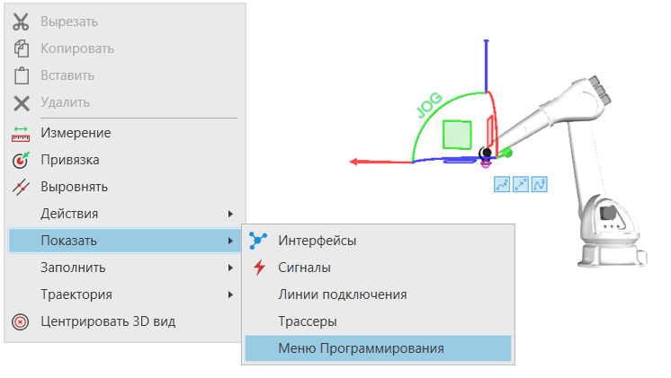

Быстрое Программирование Робота |
|
Быстрое программирование роботов позволяет создавать движения в программе робота с помощью действий в "Меню Программирования". Преимуществами являются быстрое создание положений робота и упрощение процессов для программирования роботов в трехмерном мире. При использовании инструмента Взаимодействие пользователь получает доступ к набору действий для добавления движений для активного робота, например, линейных перемещений и движений от точки к точке. Щелчок мыши по действию добавляет новое движение в программу робота. Если вы нажмете на тот же тип действия, что и предыдущее, значения ранее добавленного оператора будут использованы для создания нового движения. Если вы нажмете другое действие, в движении будут использоваться значения по умолчанию.  Вы можете настроить, какие действия будут представлены в "Меню Программирования". Например, у вас может быть список действий для добавления пользовательских операторов, вызовов подпрограмм и других команд. Чтобы настроить список отображаемых действий, отредактируйте файл конфигурации R-Pro (rpro_starter.exe.config) или используйте PythonAPI или .NET API. Пример. Настройка файла конфигурации приложения.
Пример. Добавление пункта меню с помощью PythonAPI.
|